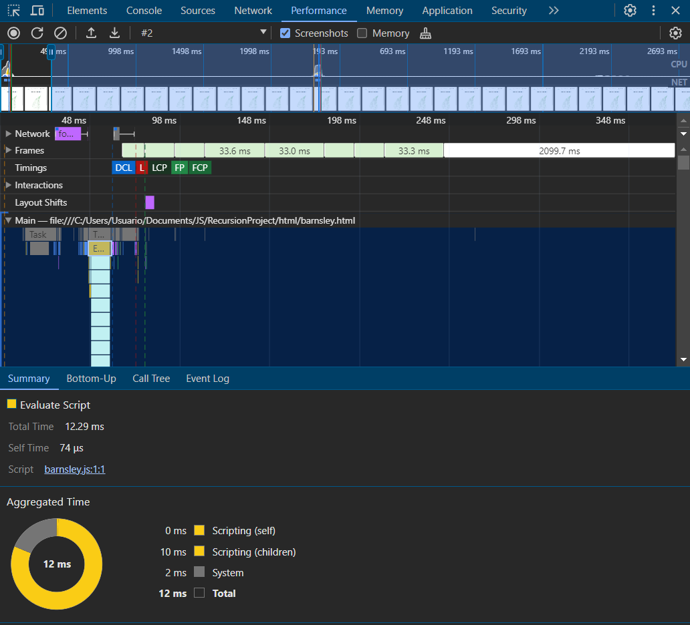

El helecho de Barnsley, también conocido como helecho de Barnely o helecho fractal, es un tipo de fractal que se asemeja a la forma de un helecho real. Se crea a partir de un sistema de ecuaciones iterativas que transforma un punto en otro, generando una estructura ramificada y autosimilar a diferentes escalas.
Sistema de ecuaciones: El helecho de Barnsley se define por un sistema de dos ecuaciones:
Ecuación 1: Xn+1 = 0.85Xn + 0.04Yn
Ecuación 2: Yn+1 = -0.04Xn + 0.85Yn
Donde:
Iteración: Se comienza con un punto inicial (X0, Y0) y se aplican las ecuaciones 1 y 2 de forma repetitiva. La secuencia de puntos resultantes forma una curva que se asemeja a la forma de un helecho.
El sistema de ecuaciones del helecho de Barnsley tiene dos parámetros que pueden modificarse para ajustar la forma del fractal:
Este código en JavaScript genera una representación del fractal de Darnsley en un elemento canvas de HTML.
const canvas = document.getElementById('barnsleyCanvas');
const ctx = canvas.getContext('2d');
const width = canvas.width;
const height = canvas.height;
function barnsleyFern(x, y, depth) {
if (depth === 0) return;
const r = Math.random();
let nextX, nextY;
if (r < 0.01) {
nextX = 0;
nextY = 0.16 * y;
} else if (r < 0.86) {
nextX = 0.85 * x + 0.04 * y;
nextY = -0.04 * x + 0.85 * y + 1.6;
} else if (r < 0.93) {
nextX = 0.2 * x - 0.26 * y;
nextY = 0.23 * x + 0.22 * y + 1.6;
} else {
nextX = -0.15 * x + 0.28 * y;
nextY = 0.26 * x + 0.24 * y + 0.44;
}
const plotX = width / 2 + nextX * width / 10;
const plotY = height - nextY * height / 12;
ctx.fillStyle = 'green';
ctx.fillRect(plotX, plotY, 1, 1);
barnsleyFern(nextX, nextY, depth - 1);
}
barnsleyFern(0, 0, 5000);
const canvas = document.getElementById('barnsleyCanvas');
const ctx = canvas.getContext('2d');
const width = canvas.width;
const height = canvas.height;
if (depth === 0) return;
const r = Math.random();
const plotX = width / 2 + nextX * width / 10;
const plotY = height - nextY * height / 12;
ctx.fillStyle = 'green';
ctx.fillRect(plotX, plotY, 1, 1);
barnsleyFern(nextX, nextY, depth - 1);
barnsleyFern(0, 0, 5000);
Se uso la interfaz de la herramienta de desarrollo del navegador Chrome, específicamente la pestaña de "Performance" durante una sesión de perfilado (profile) de rendimiento.
Se centra más en el archivo barnsley.js ya que este solo tiene una sola función al contrario de los otros fractales que tenían múltiples funciones.
La grabación de rendimiento es mucho más corta que las anteriores, con un total aproximado de 2.1 segundos, este es el tiempo que tarda el archivo encargado de calcular el fractal de barnsley.
Un tiempo muy bajo de 12.29 ms, lo que indica que los cálculos y el manejo del script son muy eficientes.
Sistema: 2 ms, que es casi despreciable.
Hay muy poca actividad en el hilo principal, con solo un breve pico de ejecución de script al principio, y luego el hilo principal parece estar mayormente inactivo.
Solo 74 µs, que es la cantidad de tiempo que el script pasa ejecutando código fuera de cualquier llamada a funciones.
Este fractal es mucho menos exigente en términos de procesamiento y pintado en comparación con los fractales de Mandelbrot y Julia que se evaluaron anteriormente. Aunque, el fractal de helecho de Barnsley es conocido por ser relativamente simple en términos de cálculos iterativos, lo que puede ser la razón de su baja demanda de recursos.
Este código de helecho de Barnsley es bastante eficiente en su enfoque básico, pero siempre hay espacio para optimizaciones y mejoras, especialmente para adaptarlo a diferentes contextos de uso o para hacerlo más versátil y eficiente:
La recursividad profunda puede llevar a un desbordamiento de la pila en algunos casos. Convertir el proceso recursivo en un bucle iterativo podría prevenir este riesgo y manejar grandes números de iteraciones más eficientemente.
Para animaciones o para dibujar grandes cantidades de puntos, usar requestAnimationFrame puede mejorar el rendimiento al sincronizar el renderizado con el refresco del navegador, evitando el trabajo innecesario.
En lugar de dibujar cada punto individualmente, se podrían acumular varios puntos y dibujarlos en lotes utilizando ctx.putImageData, lo cual puede ser más eficiente.
Dependiendo del nivel de detalle deseado o del tamaño del canvas, podría ser útil ajustar dinámicamente el número de iteraciones (profundidad) para optimizar el rendimiento y la calidad visual.
Para mejorar el rendimiento, especialmente en dispositivos con menos capacidad de procesamiento, se podría dibujar el fractal en un canvas de menor resolución y luego escalarlo al tamaño deseado.
Si el fractal debe ser interactivo (por ejemplo, permitiendo al usuario cambiar los parámetros del fractal en tiempo real), se debe asegurar que solo se redibuje cuando sea necesario, evitando el redibujado constante.